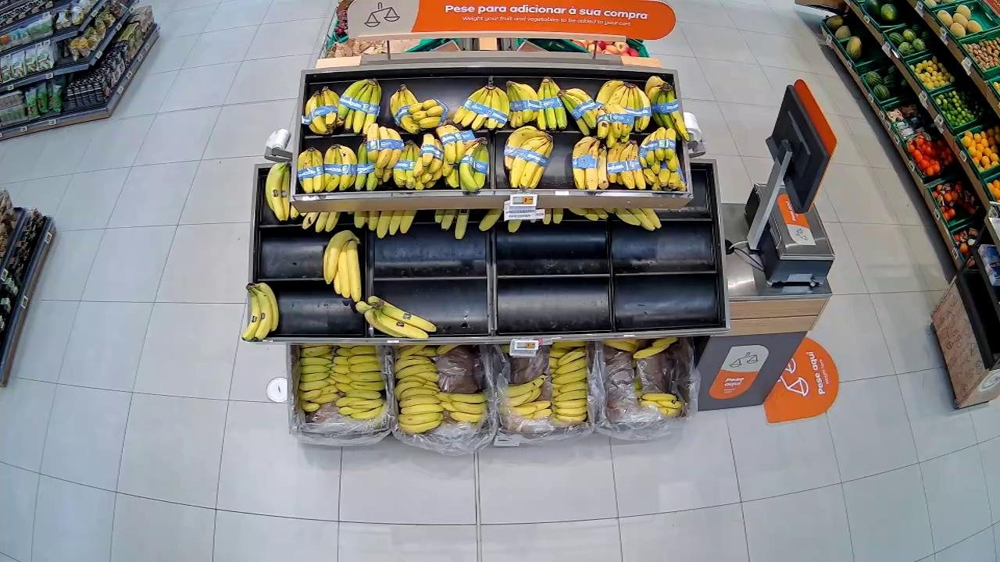

Sensei challenge · JunctionX Lisbon 2026
TrustyShelf
Smarter shelves, better decisions.
It's 6 PM. A customer wants bananas. The basket is empty.
That sale is gone. And unless a member of staff happens to walk past, the basket stays empty.
Stores don't lack cameras. Their cameras can't tell them what needs attention.
The solution
So we gave them one.
Is the right product in the right place?
Is the shelf empty, half-stocked, or full?

The solution
We don't just show you the shelves. We show you what needs to be done.
Camera seesEmpty banana basket
→
Restock bananas
Camera seesBananas in the orange slot
→
Check this shelf
Camera seesHalf a crate left
→
Top up soon
Let me show you.
Open the dashboard D
Evidence
Not one model making a guess.
Scored with the challenge's own rules, where mistakes don't cost the same:
+1correct
−2stock too low
−3stock too high
Visual featuresFill, colour and texture measured straight from the image.
Labelled look-alikesThe same slot on earlier, labelled observations.
Change over timeWhat this slot looked like in the previous capture.
Vision-language modelCompares what it sees with the product the planogram expects.
One confidence-aware decision. Probabilities in, the answer with the best expected score out. When the evidence is uncertain, it takes the cheaper mistake.
Less time searching. More time solving.
Today
We identify what needs attention, from the cameras already on the ceiling.
Tomorrow
Anticipate when shelves will run empty, reduce waste, and see how products move through the day.
TrustyShelf. Smarter shelves, better decisions.